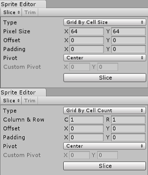

Sprite Editor
Sometimes a sprite texture contains just a single graphic element but it is often more convenient to combine several related graphics together into a single image. For example, the image could contain component parts of a single character, as with a car whose wheels move independently of the body. Unity makes it easy to extract elements from a composite image by providing a Sprite Editor for the purpose.
NOTE:
Make sure the graphic you want to edit has its Texture Type set to Sprite (2D and UI). For information on importing and setting up sprites, see Sprites.
Sprite textures with multiple elements need the Sprite Mode to be set to Multiple in the Inpsector. (See Fig 2: Texture Import Inspector... below.)
Opening the Sprite Editor
To open the Sprite Editor:
Select the 2D image you want to edit from the Project View (Fig 1: Project View).
Note that you can't edit a sprite which is in the Scene View.
Click on the Sprite Editor button in the Texture Import Inspector (Fig 2: Texture Import Inspector) and the Sprite Editor displays (Fig 3: Sprite Editor).
Note: You can only see the Sprite Editor button if the Texture Type on the image you have selected is set to Sprite (2D and UI).


Note: Set the Sprite Mode to Multiple in the Texture Import Inspector if your image has several elements.

Along with the composite image, you will see a number of controls in the bar at the top of the window. The slider at the top right controls the zoom, while the color bar button to its left chooses whether you view the image itself or its alpha levels. The right-most slider controls the pixelation (mipmap) of the texure. Moving the slider to the left reduces the resolution of the sprite texture. The most important control is the Slice menu at the top left, which gives you options for separating the elements of the image automatically. Finally, the Apply and Revert buttons allow you to keep or discard any changes you have made.
Using the Editor
The most direct way to use the editor is to identify the elements manually. If you click on the image, you will see a rectangular selection area appear with handles in the corners. You can drag the handles or the edges of the rectangle to resize it around a specific element. Having isolated an element, you can add another by dragging a new rectangle in a separate part of the image. You'll notice that when you have a rectangle selected, a panel appears in the bottom right of the window:

The controls in the panel let you choose a name for the sprite graphic and set the position and size of the rectangle by its coordinates. A border width, for left, top, right and bottom can be specified in pixels. There are also settings for the sprite's pivot, which Unity uses as the coordinate origin and main "anchor point" of the graphic. You can choose from a number of default rectangle-relative positions (eg, Center, Top Right, etc) or use custom coordinates.
The Trim button next to the Slice menu item will resize the rectangle so that it fits tightly around the edge of the graphic based on transparency.
Note: Borders are only supported for the UI system, not for the 2D SpriteRenderer.
Automatic Slicing
Isolating the sprite rectangles manually works well but in many cases, Unity can save you work by detecting the graphic elements and extracting them for you automatically. If you click on the Slice menu in the control bar, you will see this panel:

With the slicing type set to Automatic, the editor will attempt to guess the boundaries of sprite elements by transparency. You can set a default pivot for each identified sprite. The Method menu lets you choose how to deal with existing selections in the window. The Delete existing option will simply replace whatever is already selected, Smart will attempt to create new rectangles while retaining or adjusting existing ones, and Safe will add new rectangles without changing anything already in place.
Grid by Cell Size or Grid by Cell Count options are also available for the slicing type. This is very useful when the sprites have already been laid out in a regular pattern during creation:

The Pixel Size values determine the height and width of the tiles in pixels. If you chose grid by cell count, Column & Row determines the number of columns and rows used for slicing. You can also use the Offset values to shift the grid position from the top-left of the image and the Padding values to inset the sprite rectangles slightly from the grid. The Pivot can be set with one of nine preset locations or a Custom Pivot location can be set.
Note that after any of the automatic slicing methods has been used, the generated rectangles can still be edited manually. You can let Unity handle the rough definition of the sprite boundaries and pivots and then do any necessary fine tuning yourself.
Polygon Resizing
Open the Sprite Editor for a polygon and you have the option to change its shape, size, and pivot position.
Shape

Enter the number of sides you want the polygon to have in the Sides field and click Change.
Size and Pivot
SIZE: To change the polygon's size, click on the sprite to display green border lines and the Sprite information box. Click and drag on the green lines to create the border you want, and the values in the Border fields change. (Note that you cannot edit the Border fields directly.)
PIVOT: To change the polygon's pivot point (that is the axis point the polygon moves around), click on the image to display the Sprite information box. Click on the Pivot drop down menu and select an option. This displays a blue pivot circle on the polygon; its location depends on the pivot option to you have selected. If you want to change it further, select Custom Pivot and click and drag on the blue pivot circle to position it. (Note that you cannot edit the Pivot fields directly.)